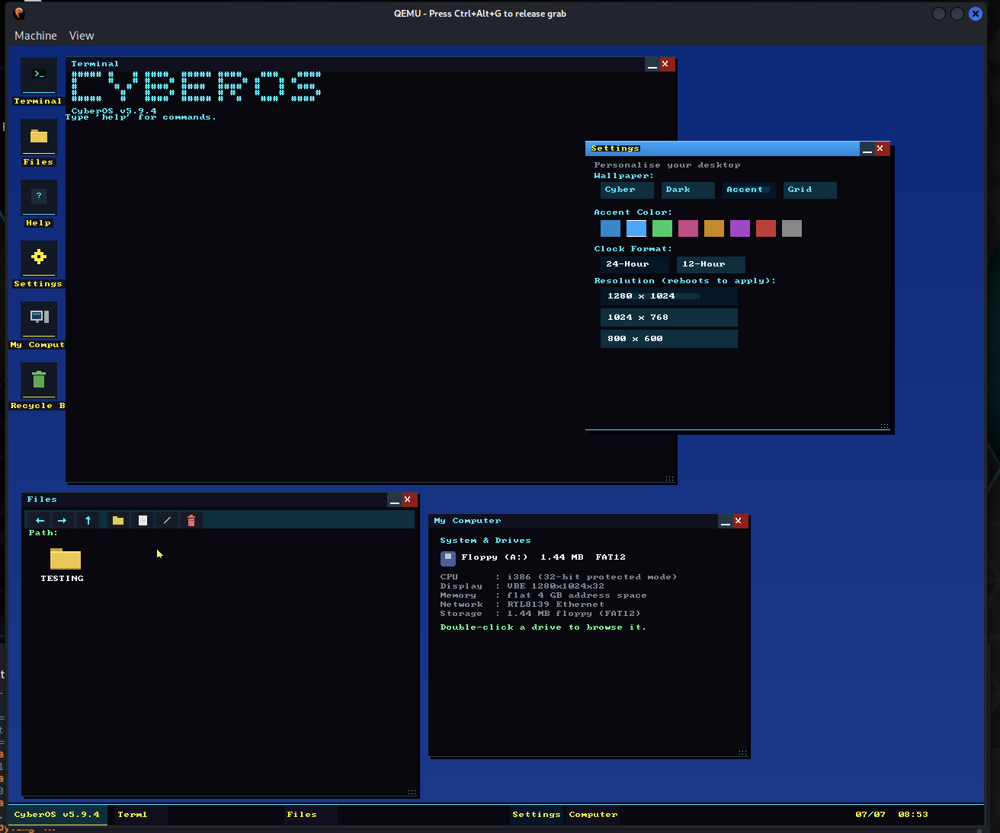

A custom x86 operating system with its own windowed desktop, written from scratch.

CyberOS is a 32-bit x86 operating system built entirely from scratch — no existing kernel, no framework, just a hand-written bootloader and kernel talking directly to the hardware. What started as a boot sequence and a text shell has grown into a genuine windowed desktop environment: draggable, resizable windows, a taskbar, a working Files app, and a Settings app with live theming — all running on top of a bootloader and kernel I wrote myself.
The current build boots straight into a full desktop, not just a shell prompt:
- Taskbar — shows the OS version, running app buttons (Terminal, Files,
Settings, Computer), and a live clock
- Terminal — the original command-line shell, now running inside its own
window
- Files — a working file browser with back/forward/up navigation, folder
creation, and delete
- Settings — live desktop personalisation: wallpaper themes (Cyber, Dark,
Accent, Grid), an accent colour picker, 24-hour/12-hour clock toggle, and resolution
switching (800×600 up to 1280×1024, applied on reboot)
- My Computer — a system summary window: CPU mode, display mode, memory,
network adapter, and storage, all read from the live system rather than hard-coded
- Recycle Bin — because a desktop isn't a desktop without one
System & Drives Floppy (A:) 1.44 MB FAT12 CPU : i386 (32-bit protected mode) Display : VBE 1280x1024x32 Memory : flat 4 GB address space Network : RTL8139 Ethernet Storage : 1.44 MB floppy (FAT12)
Booting still happens in three hand-written stages, each doing just enough to hand off to the next, before the kernel brings up the desktop shell on top:
Stage 1 — a 512-byte real-mode bootstrap that fits in the boot sector and
loads the next stage from disk.
Stage 2 — a loader that sets up memory and the transition into 32-bit
protected mode.
Stage 3 — the kernel: drivers, the VBE display, the RTL8139 driver, the
window manager, and the desktop apps.
CyberOS Build System v2.0 [1/3] Assembling stage1.asm ... [2/3] Assembling stage2_loader.asm ... [3/3] Assembling stage3_kernel.asm ... [IMG] Building floppy.img ... floppy.img ready (1.44MB)
I wanted to actually understand what an operating system does under the hood — not just use one. Writing the bootloader by hand, wrestling with the jump into protected mode, and writing a network driver against real hardware registers forces a level of understanding that using Linux never does. What keeps me coming back to it is watching it grow from a blinking cursor in a text shell into something with its own window manager and Settings app — each version proves out another piece of "real OS" functionality.